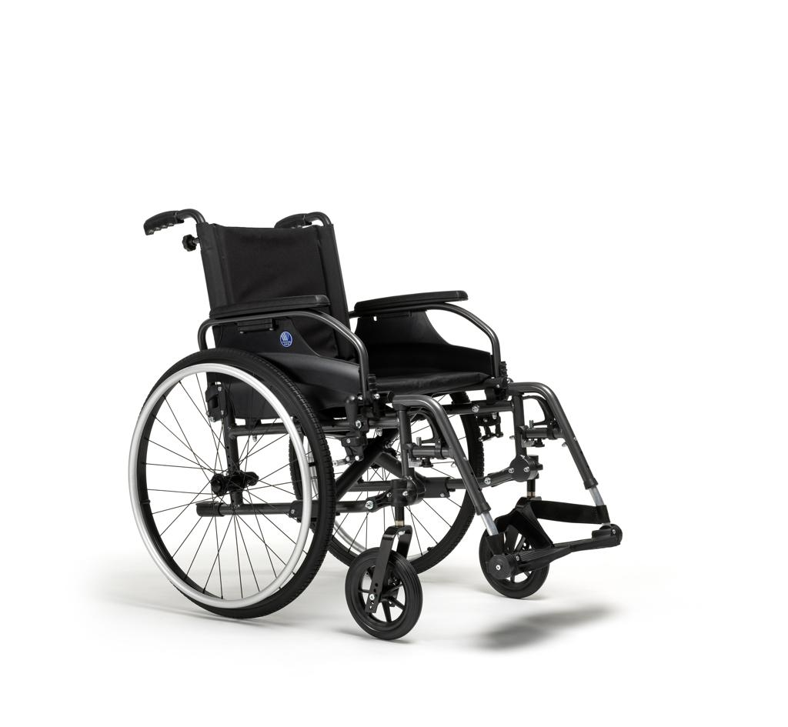
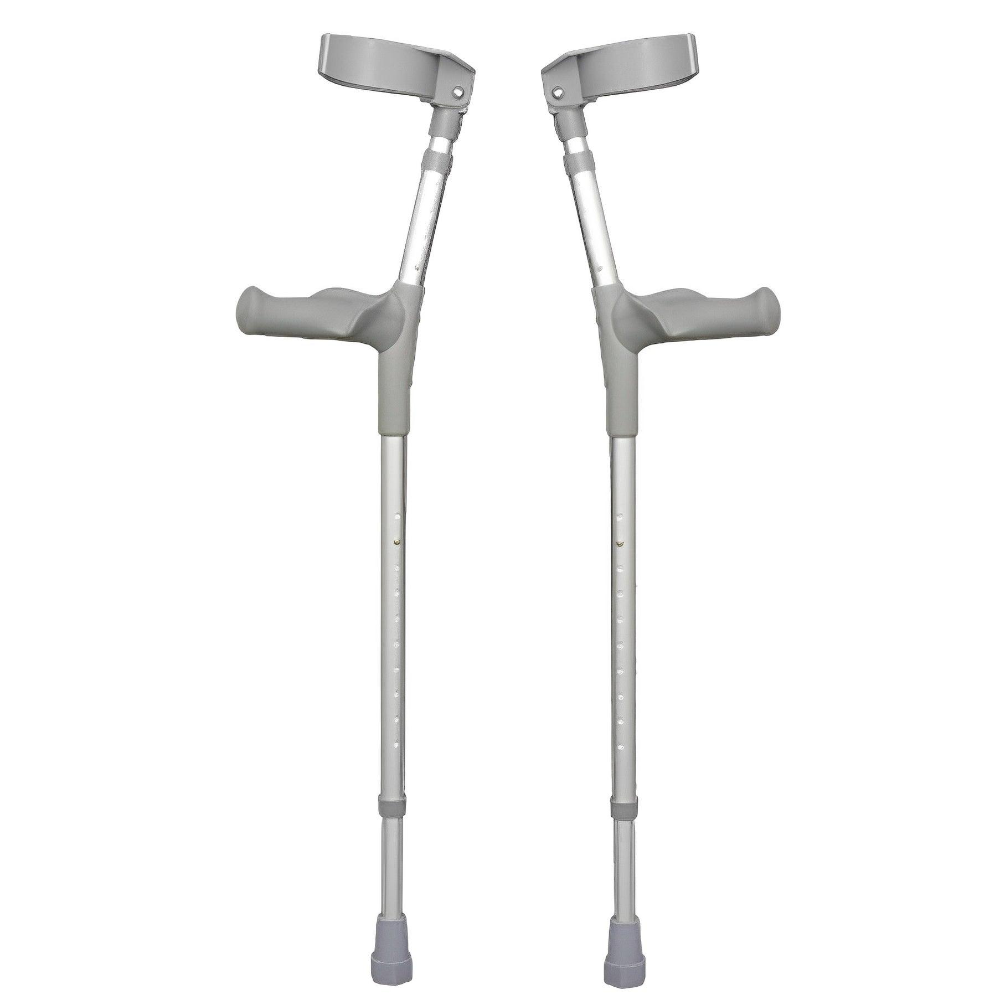
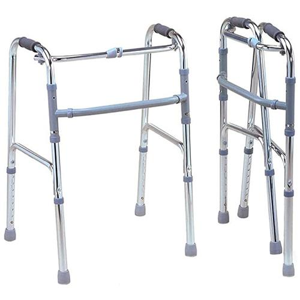
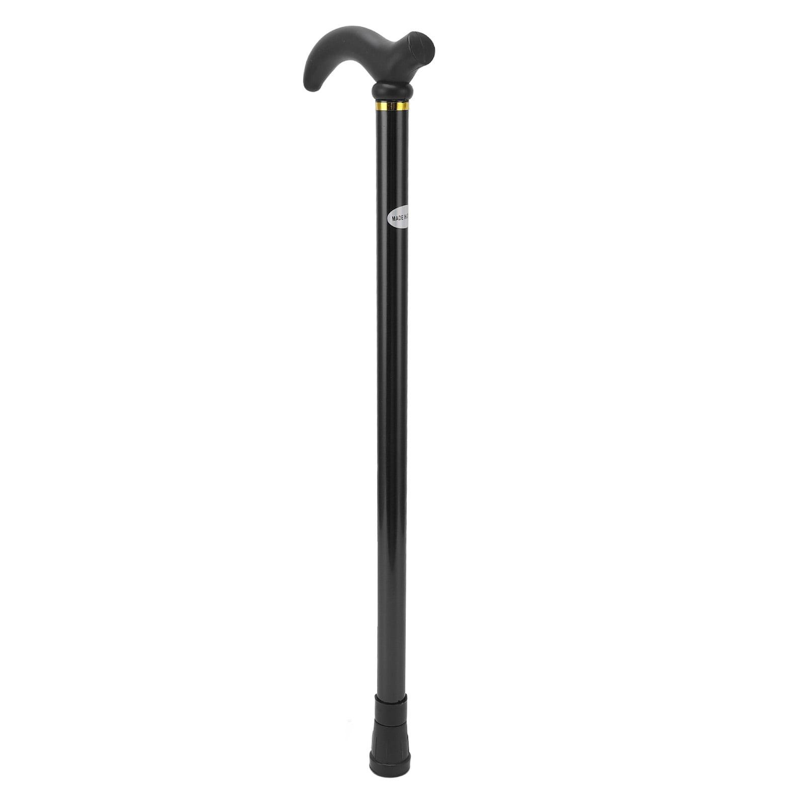
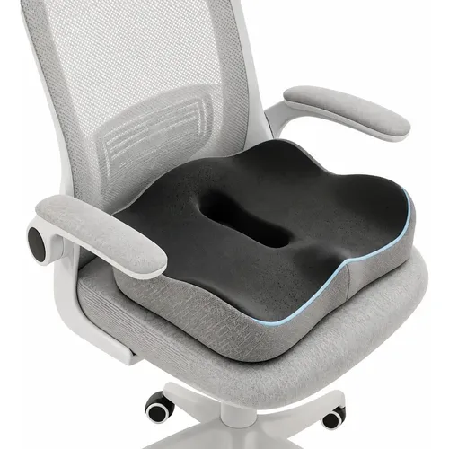

01
Sillas de ruedas
Soluciones para desplazarse con seguridad y lograr una mayor independencia en espacios interiores y exteriores.
Accede a ayudas técnicas que favorecen tu movilidad mediante un proceso organizado, seguro y orientado al acompañamiento de cada beneficiario.
Mobility Aids es una plataforma orientada a la gestión responsable de ayudas técnicas. Facilita el seguimiento de los equipos disponibles, los beneficiarios y las operaciones de préstamo y devolución.
Nuestro propósito es hacer visible cada recurso, evitar pérdidas de disponibilidad y apoyar una atención organizada para las personas que necesitan mejorar su autonomía.
Encuentra la opción que mejor responde a cada necesidad de movilidad.

Soluciones para desplazarse con seguridad y lograr una mayor independencia en espacios interiores y exteriores.

Apoyos que ayudan a reducir la carga sobre una extremidad y facilitan un desplazamiento controlado.

Aparatos de apoyo diseñados para mejorar la estabilidad y brindar mayor confianza al caminar.

Apoyo ligero para equilibrar el peso, mejorar la marcha y desarrollar las actividades diarias con seguridad.

Apoyos que favorecen una posición más cómoda, una mejor distribución del peso y una protección adicional al sentarse.
Descubre cómo Mobility Aids organiza el acceso a ayudas técnicas, acompaña a las personas beneficiarias y mantiene el control responsable de cada recurso.
El sistema reúne la información necesaria para mantener disponibles las ayudas técnicas y brindar una atención más clara y organizada.
Apoyo práctico para realizar actividades con mayor confianza.
Información de disponibilidad, préstamos y devoluciones.
Indicaciones comprensibles antes y durante el uso del recurso.
Se registra la información del beneficiario.
Se identifica la ayuda técnica requerida.
Se verifica la disponibilidad y se entrega el recurso.
Se registra la entrega y se actualiza el inventario.